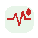

‹
任务库(task 库)
+ 新建
可插拔组件
每个任务组件定义不同的录入字段。在系统开发时定制,后续可扩展。
项目编辑模式
为「
90 天卒中连续健康管理
」选择任务组件。 勾选后点击下方"完成选择"。
已选(
5
)
可选(
3
)
现有任务组件(8)

记录血压
数值字段:收缩压 / 舒张压 / 心率
已选
›
记录血糖
数值字段:空腹 / 餐后
已选
›
服药反馈
枚举字段:依从 / 漏服 / 停药 + 备注
可选
›
电话回访
枚举字段:接通方式 + 异常分级
已选
›
上传检查报告
文件字段:照片 + 数值 + 机构 + 日期
可选
›
康复训练打卡
枚举:步行 / 被动运动 / 语言训练
可选
›
口述病例
语音录入 + 文本 + 医生整理
已选
›
建立药物清单
多药品 + 剂量 + 频次
已选
›
扩展说明
:新组件可在迭代中增加,定义字段后自动出现在医生"下发任务"列表。
项目
任务库
药品
切换